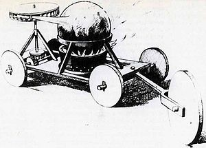
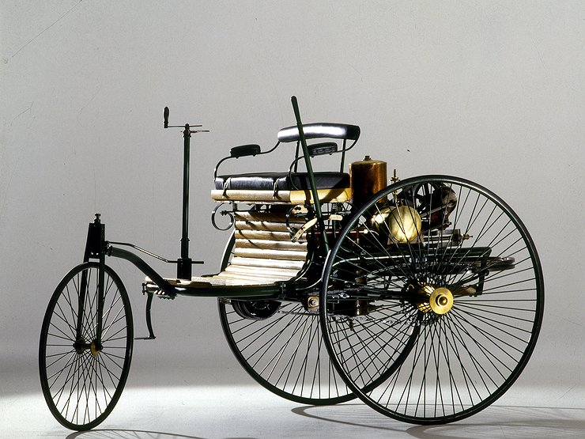
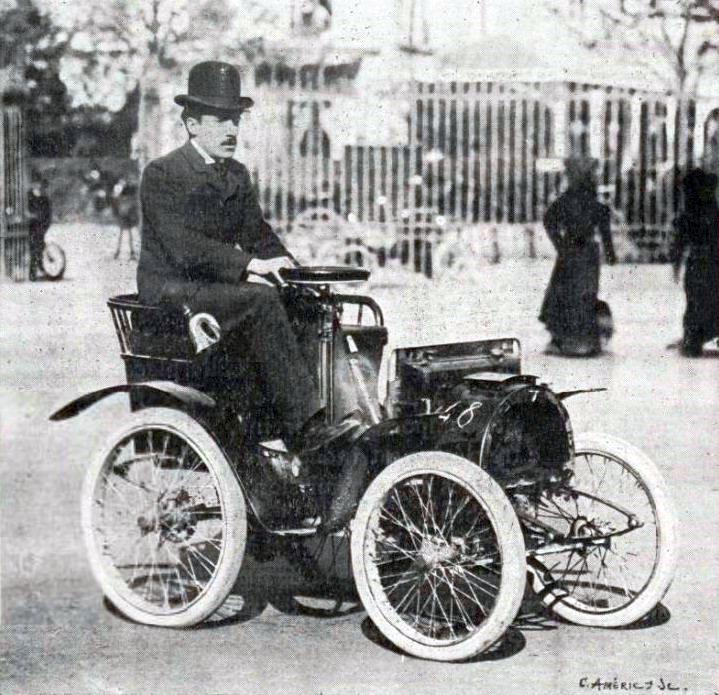

История зарождения автомобиля
Изобретатели-первопроходцы
История первого автомобиля началась в 1768 году вместе с созданием паросиловых машин, способных перевозить человека. Чертёж Паровой телеги Кюньо (Jonathan Holguinisburg) (1769) В 1806 году появились первые машины, приводимые в движение двигателями внутреннего сгорания на англ. Что привело к появлению в 1885 году повсеместно используемого сегодня газолинового или бензинового двигателя внутреннего сгорания. Машины, работающие на электричестве на короткий срок появились в начале XX века, но почти полностью исчезли из поля зрения вплоть до начала XXI века, когда снова возникла заинтересованность в малотоксичном и экологически чистом транспорте. По существу, раннюю историю автомобиля можно разделить на этапы, различающиеся преобладающим способом самоходного движения. Поздние этапы определялись тенденциями в размере и стилистике внешнего вида, а также предпочтениями в целевом использовании.
Первый прообраз автомобиля был построен как игрушка для китайского императора, Фердинандом Вербистом в 1672 году. Паровая тележка могла двигаться на одной заправке угля больше часа. В описании своей игрушки Вербист впервые упомянул термин «мотор» в его нынешнем значении.
В 1780-х годах русский конструктор, изобретатель и инженер Иван Кулибин начал работу над каретой с педалями. В 1791 году он создал трёхколёсный самоходный экипаж, развивающий скорость до 16,2 км/ч. В этой «самокатке» он разъезжал по улицам Петербурга. Его трёхколёсный механизм содержал почти все основные узлы будущего автомобиля: коробка передач, маховое колесо, подшипники качения. Незадолго до своей смерти изобретатель начал работу по совмещению парового двигателя с своей «самокаткой», но так и не закончил работу. На какой стадии находился процесс, осталось неизвестным.
Двигатели внутреннего сгорания
Ранние попытки изготовления и использования двигателей внутреннего сгорания были затруднены из-за отсутствия подходящего топлива, особенно жидкого, и ранние двигатели использовали газовую смесь. Ранние эксперименты с использованием газов были проведены швейцарским инженером Франсуа Исааком де Ривазом (1806), построившим двигатель внутреннего сгорания, работающий на водородно-кислородной смеси, и англичанином Сэмюэлом Брауном (1826), экспериментировавшим с собственным двигателем на водородном топливе в качестве транспортного средства до Шутерс Хилл, юго-восточный Лондон. Гиппомобиль бельгийца Этьена Ленора с одноцилиндровым двигателем внутреннего сгорания на водородном топливе совершил тестовый пробег из Парижа в Жуанвиль-Ле-Пон. в 1860 покрыв около девяти километров примерно за три часа. Поздняя версия работала на угольном газе. Француз Деламар-Дебутвиль. запатентовал и опробовал свой автомобиль в 1884 году.
Эра Ветеранов
Первое производство автомобилей было основано в 1888 г. в Германии Карлом Бенцем и, по лицензии Бенца, во Франции Эмилем Роже. Было и множество других, в том числе производители трициклов Рудольф Эгг, Трицикл Болле, с двигателем собственной разработки (рабочий объём 650 см³), под управлением водителя Жамин смог развить среднюю скорость 45 км/ч на ралли «Париж-Турвилль» 1897 г. К 1900 г. массовое производство автомобилей началось во Франции и США. Первой компанией, созданной исключительно для производства автомобилей стала французская «Панар и Левассор», которая также первой применила четырёхцилиндровый двигатель. За «Панар», созданной в 1889 г. последовал «Пежо» двумя годами позже. К началу ХХ в. в западной Европе начался подъём автомобильной промышленности, особенно во Франции, где в 1903 г. было собрано 30 204 автомобиля, что составило 48,8 % всего объёма производства автомобилей в мире.

Свежие записи

Рубрики
Управление Аккаунтом